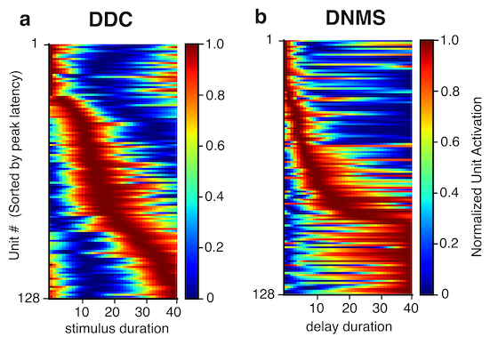
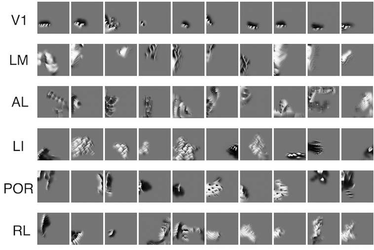
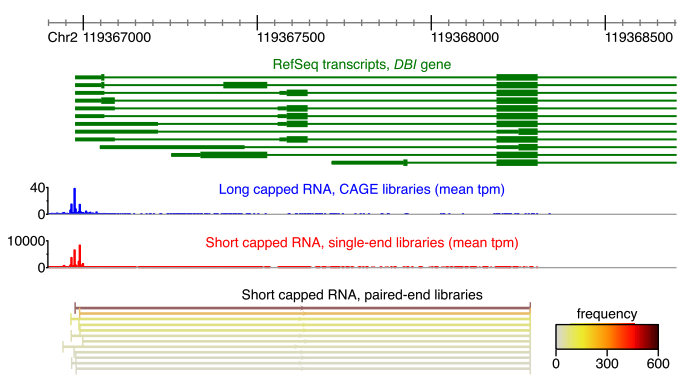

Dongyan Lin / 林冬妍
PhD Candidate in Computational Neuroscience and Artificial Intelligence
Curriculum Vitae

PhD Candidate in Computational Neuroscience and Artificial Intelligence
Hello there! My name is Dongyan (pronounced Dong-yan), I am a PhD student at
Integrated Program in Neuroscience at McGill University and Mila, supervised by
Blake Richards. My research interest lies at the intersection of artificial intelligence and neuroscience. Specifically,
I am interested in unraveling the general principles that govern both biological and artificial intelligence, through the lens of representation learning.
During my PhD, I have been working on a few projects that looked at representations in brains and machines from different angles. I was fortunate to have the opportunity
to work with Alison Gopnik (UC Berkeley),
Stuart Trenholm (McGill), and Tatiana Engel (CSHL)
on these collaborative projects.
I graduated from University of Toronto with Hon. B. Sc. in 2019, majoring in physiology while double-minoring in mathematics and psychology.
During my undergraduate studies, I received a combination of data analysis and experimental neuroscience training with Steve Prescott (Sickkids Hospital),
Michiel de Hoon (RIKEN), and Katherine Duncan (UofT).

To what extent do the temporal representations in the brain contribute to behaviour? Here, we trained deep reinforcement learning agents on
timing and time-dependent tasks, and showed the emergence of brain-like time representations in networks trained to calculate time implicitly. With virtual lesion experiments, we showed that the temporal representations largely contribute
to behaviour through recurrent dynamics, demonstrating dissociation between temporal tuning curves and timing behaviour.
(Cosyne 2022 / RLDM 2022 / CCN 2022)

In this work, we set out to answer the questions
"what do neurons in the visual cortex like to see? Do neurons in different visual areas like to see different images?" with deep learning models.
We show that mouse higher visual areas indeed prefer different visual stimuli, but their tuning landscape is more complex than single-neuron preference!
(Preprint / SfN 2022)

Since the original paper from Barack and Krakauer (2021) came out, the field of
cognitive computational neuroscience has been debating if the brain is better understood from a single-neuron ("Sherringtonian") or population geometry ("Hopfieldian") approach, or if they could be merged, or if they should remain distinct but complementary perspectives.
We organized this GAC workshop to bring together researchers whose work provides different perspectives on the two paradigms, and the possibility of their reconciliation.
(CCN 2023 workshop recording / Proposal)

I'm grateful to have contributed to the work through my internship at RIKEN. We developed a sequencing protocol for short capped RNAs, applied it to the human cell line THP-1, and compared it with the landscape of long capped RNAs,
discovering distinct transcription initiation preferences and associations with disease SNPs. This deep sequencing elucidates the diverse array of transcripts from known and novel promoters and enhancers, revealing new noncoding RNA families.
(de Hoon et al., 2022 Genome Research)
The purpose of this page is to share with you some of the things that I enjoy outside the lab.
Below are some of my go-to albums:


My all-time favourite TV show is Breaking Bad. Honourable mentions include: BoJack Horseman, Friends, The Newsroom, and How I Met Your Mother.
I really like the early works of Quentin Tarantino.